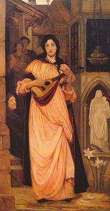

Sacred Texts Legends & Sagas England
|  |
THE ENGLISH AND SCOTTISH POPULAR BALLADSby FRANCIS JAMES CHILD.[1882-1898] |
The ultimate Child ballad etext has yet to be constructed.
This etext hence lacks the apparatus and, apparently, some of the variations
of the original text, and has some lacunae and glitches.
That said, this etext has been assembled from
the best available resources on the Internet.
This version was built using a Child corpus
constructed by Cathy Lynn Preston at the University of Colorado
(http://www.colorado.edu/ArtsSciences/CCRH/Ballads/ballads.html).
You can also view page images of the 1860 version at the Making of America
site at the University of Michigan [External site]:
Title Page
Preface
List of the Principal Collections of English and Scottish Ballads and Songs
1. Riddles Wisely Expounded
2. The Elfin Knight
3. The Fause Knight on the Road
4. Lady Isabel and the Elf Knight
5. Gil Brenton
6. Willie's Lady
7. Earl Brand
8. Erlinton
9. The Fair Flower of Northumberland
10. The Twa Sisters
11. The Cruel Brother
12. Lord Rendal
13. Edward
14. Babylon or The Bonnie Banks o Fordie
15. Leesom Brand
16. Sheath and Knife
17. Hind Horn
18. Sir Lionel
19. King Orfeo
20. The Cruel Mother
21. The Maid and the Palmer
22. St. Stephen and Herod
23. Judas
24. Bonnie Annie
25. Willie's Lyke-Wake
26. The Three Ravens
27. The Whummil Bore
28. Burd Ellen and Young Tamlane
29. The Boy and the Mantle
30. King Arthur and King Cornwall
31. The Marriage of Sir Gawain
32. King Henry
33. Kempy Kay
34. Kemp Owyne
35. Allison Gross
36. The Laily Worm and the Machrel of the Sea
37. Thomas Rymer
38. The Wee Wee Man
39. Tam Lin
40. The Queen of Elfan's Nourice
41. Hind Etin
42. Clerk Colvill
43. The Broomfield Hill
44. The Two Magicians
45. King John and the Bishop
46. Captain Wedderburn's Courtship
47. Proud Lady Margaret
48. Young Andrew
49. The Twa Brothers
50. The Bonny Hind
51. Lizie Wan
52. The King's Dochter Lady Jean
53. Young Beichan
54. The Cherry-Tree Carol
55. The Carnal and the Crane
56. Dives and Lazarus
57. Brown Robyn's Confession
58. Sir Patrick Spens
59. Sir Aldingar
60. King Estmere
61. Sir Cawline
62. Fair Annie
63. Child Waters
64. Fair Janet
65. Lady Maisry
66. Lord Ingram and Chiel Wyet
67. Glasgerion
68. Young Hunting
69. Clerk Sanders
70. Willie and Lady Maisry
71. The Bent Sae Brown
72. The Clerk's Twa Sons o Owensford
73. Lord Thomas and Annet
74. Fair Margaret and Sweet William
75. Lord Lovel
76. The Lass of Roch Royal
77. Sweet William's Ghost
78. The Unquiet Grave
79. The Wife of Usher's Well
80. Old Robin of Portingale
81. Little Musgrave and Lady Barnard
82. The Bonny Birdy
83. Child Maurice
84. Bonny Barbara Allen
85. Lady Alice
86. Young Benjie
87. Prince Robert
88. Young Johnstone
89. Fause Foodrage
90. Jellon Grame
91. Fair Mary of Wallington
92. Bonny Bee Hom
93. Lamkin
94. Young Waters
95. The Maid Freed From the Gallows
96. The Gay Goshawk
97. Brown Robin
98. Brown Adam
99. Johnie Scott
100. Willie o Winesberry
101. Willie o Couglas Dale
102. Willie and Earl Richard's Daughter
103. Rose the Red and White Lily
104. Prince Heathen
105. The Bailiff's Daughter of Islington
106. The Famous Flower of Serving Men
107. Will Steward and John
108. Christopher White
109. Tom Potts
110. The Knight and the Shepherd's Daughter
111. Crow and Pie
112. Blow Away the Morning Dew
113. The Great Silkie of Sule Skerry
114. Johnie Cock
115. Robyn and Gandeleyn
116. Adam Bell, Clim of the Clough and William of Cloudesly
117. The Gest of Robyn Hode
118. Robin Hood and Guy of Gisborne
119. Robin Hood and the Monk
120. Robin Hood's Death
121. Robin Hood and the Potter
122. Robin Hood and the Butcher
123. Robin Hood and the Curtal Friar
124. The Jolly Pindar of Wakefield
125. Robin Hood and Little John
126. Robin Hood and the Tanner
127. Robin Hood and the Tinker
128. Robin Hood and the Newly Revived
129. Robin Hood and the Prince of Aragon
130. Robin Hood and the Scotchman
131. Robin Hood and the Ranger
132. The Bold Pedlar and Robin Hood
133. Robin Hood and the Beggar, I
134. Robin Hood and the Beggar, II
135. Robin Hood and the Shepherd
136. Robin Hood's Delight
137. Robin Hood and the Pedlars
138. Robin Hood and Allen a Dale
139. Robin Hood's Progress to Nottingham
140. Robin Hood Rescuing Three Squires
141. Robin Hood Rescuing Will Stutly
142. Little John a Begging
143. Robin Hood and the Bishop
144. Robin Hood and the Bishop of Hereford
145. Robin Hood and Queen Katherine
146. Robin Hood's Chase
147. Robin Hood's Golden Prize
148. The Noble Fisherman or Robin Hood's Preferment
149. Robin Hood's Birth, Breeding, Valor and Marriage
150. Robin Hood and Maid Marian
151. The King's Disguise, and Friendship with Robin Hood
152. Robin Hood and the Golden Arrow
153. Robin Hood and the Valiant Knight
154. A True Tale of Robin Hood
155. Sir Hugh, or the Jew's Daughter
156. Queen Eleanor's Confession
157. Gude Wallace
158. High Spencer's Feats in France
159. Durham Field
160. The Knight of Liddesdale
161. The Battle of Otterburn
162. The Hunting of the Cheviot
163. The Battle of Harlaw
164. King Henry Fifth's Conquest of France
165. Sir John Butler
166. The Rose of England
167. Andrew Bartin
168. Flodden Field
169. Johnie Armstrong
170. The Death of Queen Jane
171. Thomas Cromwell
172. Musselburgh Field
173. Mary Hamilton
174. Earl Bothwell
175. The Rising in the North
176. Northumberland Betrayed by Douglas
177. The Earl of Westmoreland
178. Captain Car, or, Edom o Gordon
179. Rookhope Ryde
180. King James and Brown
181. The Bonnie Earl o' Moray
182. The Laird of Logie
183. Willie Macintosh
184. The Lads of Wamphray
185. Dick o the Cow
186. Kinmont Willie
187. Jock o the Side
188. Archie o Cawfield
189. Hobie Noble
190. Jamie Telfer of the Fair Dodhead
191. Hughie Graham
192. The Lochmaben Harper
193. The Death of Parcy Reed
194. The Laird of Wariston
195. Lord Maxwell's Last Goodnight
196. The Fire of Frendruahgt
197. James Grant
198. Bonny John Seton
199. Bonnie House o' Airlie
200. The Gypsy Laddie
201. Bessy Bell and Mary Gray
202. The Battle of Philiphaugh
203. The Baron of Brackley
204. Jamie Douglas
205. Loudon Hill, or Dromclog
206. Bothwell Bridge
207. Lord Delamere
208. Lord Dernwentwater
209. Geordie
210. Bonnie James Campbell
211. Bewick and Graham
212. The Duke of Athole's Nurse
213. Sir James the Rose
214. The Braes o Yarrow
215. Rare Willie Drowned in Yarrow, or, The Water o Gamrie
216. The Mother's Malison, or, Clyde's Water
217. The Broom of Cowdenknows
218. The False Lover Won Back
219. The Gardener
220. The Bonny Lass of Anglesley
221. Katherine Jafray
222. Bonny Baby Livingston
223. Epie Morrie
224. The Lady of Arngosk
225. Rob Roy
226. Lizie Lindsay
227. Bonny Lizie Baillie
228. Glasgow Peggie
229. Earl Crawford
230. The Slaughter of the Laird of Mellerstain
231. The Earl of Errol
232. Richie Story
233. Andrew Lammie
234. Charlie MacPherson
235. The Earl of Aboyne
236. The Laird o Drum
237. The Duke of Gordon's Daughter
238. Glenlogie or Jean o Bethalnie
239. Lord Saltoun and Auchanachie
240. The Rantin Laddie
241. The Baron o Leys
242. The Coble o Cargin
243. James Harris, (The Daemon Lover)
244. James Hatley
245. Young Allan
246. Redesdale and Wise William
247. Lady Elspat
248. The Grey Cock, or, Saw You My Father
249. Auld Matrons
250. Henry Martyn
251. Lang Johnny More
252. The Kitchie-Boy
253. Thomas o Yonderdale
254. Lord William, or Lord Lundy
255. Willie's Fatal Visit
256. Alison and Willie
257. Burd Isabel and Earl Patrick
258. Broughty Wa's
259. Lord Thomas Stuart
260. Lord Thomas and Lady Margaret
261. Lady Isabel
262. Lord Livingston
263. The New-Slain Knight
264. The White Fisher
265. The Knight's Ghost
266. John Thomson and the Turk
267. The Heir of Linne
268. The Twa Knights
269. Lady Diamond
270. The Earl of Mar's Daughter
271. The Lord of Lorn and the False Steward
272. The Suffolk Miracle
273. King Edward the Fourth and a Tanner of Tamworth
274. Our Goodman
275. Get Up and Bar the Door
276. The Friar in the Well
277. The Wife Wrapt in Wether's Skin
278. The Farmer's Curst Wife
279. The Jolly Beggar
280. The Beggar-Laddie
281. The Keach I the Creel
282. Jock the Leg and the Merry Merchant
283. The Crafty Farmer
284. John Dory
285. The George Aloe and the Sweepstake
286. The Sweet Trinity (The Golden Vanity)
287. Captain Ward and the Rainbow
288. The Young Earl of Essex's Victory Over the Emperor of Germany
289. Mermaid
290. The Wylie Wife of the Hie Toun Hie
291. Child Owlet
292. The West-Country Damosel's Complaint
293. John of Hazelgreen
294. Dugal Quin
295. The Brown Girl
296. Walter Lesly
297. Earl Rothes
298. Young Peggy
299. Trooper and Maid
300. Blancheflour and Jellyflorice
301. The Queen of Scotland
302. Young Bearwell
303. The Holy Nunnery
304. Young Ronald
305. The Outlaw Murray
![g'.г.Ail maiden ©uмонетი: ℞ubli© ძ'ommAin 🖼 ImageI by 'Art'hur R_AckHÅm' & All inclusive names to my Roots && me, me I.B.M.l. ასლაჼ კლდიაშვილი, А©ЛАჼ ©КЛიДиÅWвიЛи [1922], @novadays ი.ბ. АйбоЛит [Aibolem МЕЛОДИЯR₾ი მო'სი'კვÅჼ]](https://barionleg.github.io/db-sacred-texts.li/neu/ba_geo_f.png) |